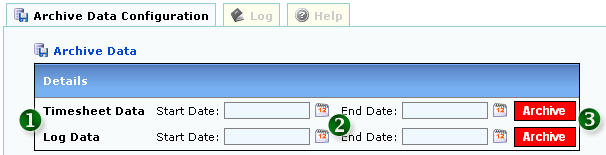

<table class="no-border" cellpadding=3 cellspacing=3>
<tr><td>
	<H1>1. Archive Data</H1>
	<pre align="left">     
	<strong>Figure 1: Archive Data</strong></pre>
	<ol>
		<li><strong>1. ARCHIVE TYPE</strong></li>
		<li><strong>2. ARCHIVE START AND END DATA DATE</strong></li>
		<li><strong>3. EXECUTE ARCHIVE:</strong> WARNING! Archiving Data will REMOVE current Data in System to SQL File</li>
	</ol>
</td></tr>
</table>